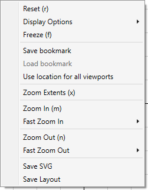

The viewport system uses the optimal native system for the platform being used (Vulkan, OpenGL, Direct3D, Metal). You can zoom with your mouse wheel and also move around using the WASD keys. If you get lost in the viewport, hit ‘r’ and the viewport will go back to the origin and default zoom. 'f' will freeze/thaw the viewport, preventing mouse input changing the camera position and zoom until thawed. 'n' and 'm' will zoom in/out. Tooltips will be displayed on mouse hover, providing a reference for the user.
Context menus are available in viewports - simply right click. Note that the implant and DOE menus lack some of the entries.

Most of the entries should be self-explanatory, but an overview is below:
For layer previews involving a DOE tile (configured under the preferences), 'zoom extents' will consider the extracted geometry for the extents unless 'show drawn' is active, in which case the full layout is considered.